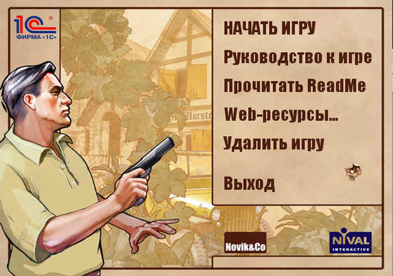

Системные требования
КомплектностьCD-версия:
Установка игрыУстановите диск с меткой «Диск 1» в привод для чтения компакт-дисков. Через некоторое время на экране должно появиться меню автозапуска. Если на вашем компьютере отключен автоматический запуск программ с компакт-дисков, запустите программу Autorun.exe, находящуюся на диске. В правой части экрана программы автозапуска расположено меню, открывающее доступ к игре и различным ресурсам:
 Выберите пункт меню «Установить» для запуска мастера установки, далее следуйте инструкциям, появляющимся на экране. Инсталлятор предложит вам выбрать рабочий каталог для установки игры, по умолчанию это: Внимание! Процесс установки может занять несколько минут. В течение всего этого времени нежелательно выполнять на компьютере какие-либо другие работы, в том числе в фоновом режиме. Перед началом установки настоятельно рекомендуется отключить или остановить антивирусный монитор и отключить экранную заставку (Screen-saver). Когда установка будет успешно завершена, монитор и заставку можно включить снова. После завершения установки игры в меню Start (Пуск) компьютера будет создана программная группа игры «Серп и Молот». В ней находятся следующие ссылки:
ПереустановкаЕсли с течением времени вы обнаружите, что игра перестала нормально запускаться, не работают ссылки в программной группе, появились сообщения об ошибках или возникли другие неполадки, которых раньше не было, то одной из причин может быть повреждение файлов с ресурсами игры. Переустановка игры позволяет восстановить повреждённые файлы. Для этого установите диск с меткой «Диск 1» в привод для компакт-дисков и дождитесь появления меню программы автозапуска, или запустите вручную программу Autorun.exe, находящуюся на диске. В меню выберите пункт «Удалить/Исправить» и в диалоговом окне программы установки выберите пункт «Исправить». УдалениеДля удаления игры установите диск с меткой «Диск 1» в привод для компакт-дисков, дождитесь появления меню программы автозапуска, выберите пункт «Переустановить/Удалить игру» и в диалоговом окне программы установки выберите пункт «Удалить». Другой вариант: выберите пункт «Удалить (переустановить) игру» из программной группы игры «Серп и Молот» в меню Start (Пуск). Запуск игрыВариант 1: установите диск с меткой «Диск 1» в привод для компакт-дисков и дождитесь появления на экране меню программы автозапуска. Выберите пункт «Запустить игру». Вариант 2: установите диск в привод для компакт-дисков и запустите игру по ссылке «Начать игру» из программной группы «Серп и Молот» в стартовом меню (Start или Пуск). При первом запуске игра может потребовать ввод индивидуального кода системы защиты от копирования, который представляет собой набор цифр и латинских букв. Код должен быть напечатан на внутренней части вкладыша или находиться внутри коробки рядом с компакт-диском. Введите код в диалоговом окне системы защиты, соблюдая регистр, при необходимости переключите язык клавиатуры. При следующих запусках игры ввода кода больше не потребуется, достаточно установить в привод первый (игровой) диск и дождаться его идентификации. После вступительных роликов появится экран главного меню. Для начала игры выберите пункт «Кампания». Более подробное описание правил игры и её интерфейса читайте в следующих разделах. |